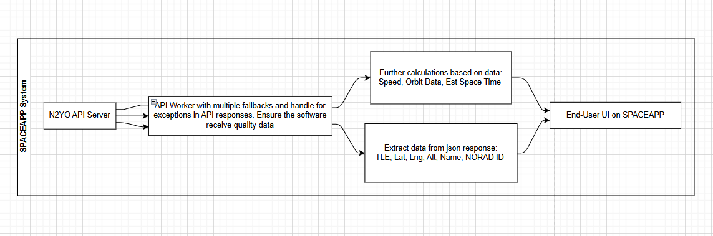

Getting Started
Welcome to the official SPACEAPP Documentation. This guide provides everything you need to set up and run our real-time satellite tracking application from installation to first launch.
Before running any SPACEAPP model, make sure your environment meets the basic requirements below:
- Ensure you have Python 3.8+ installed and properly configured in your PATH.
- Clone or download the source code versions via the Model Delivery Form. You’ll receive further instructions via email.
- Review the Main Page for general usage guidelines and system compatibility.
- Read through this Documentation to understand the setup and architecture before running the application.
- Install the required dependencies using:
pip install -r requirements.txt - Register and generate your API Key from n2yo.com, then configure it following the steps in
README.md. - Launch SPACEAPP and begin exploring real-time satellite data.
Note: Although we're currently supporting only Windows for the SPACEAPP installation, its Source Codes we are offering does not required any specific system.
SPACEAPP Architecture
The following diagrams and explanations describe the architecture used in SPACEAPP versions prior to v5.0. These early versions were designed around a lightweight modular structure focused on real-time data retrieval, user responsiveness, and API-based satellite tracking.
Architecture Overview:
-
System Flow
This diagram demonstrates how SPACEAPP collects satellite data from external APIs, processes it through internal modules, and renders it in the user interface.
 -
Core Components & Modules
Each module below handled a distinct aspect of SPACEAPP’s data processing pipeline in versions < v5.0:
- Data Acquisition Module: Retrieves live satellite data via
n2yoAPI and other real-time sources. - Data Processing Module: Parses, filters, and formats incoming data for display and analytics.
- User Interface Module: Handles visualization, user interactions, and satellite tracking on the map.
- Data Acquisition Module: Retrieves live satellite data via
API Integration
SPACEAPP leverages the n2yo.com API for real-time satellite tracking data. Below are the key endpoints used:
- /satellite/positions: Retrieves current positions of specified satellites.
- /satellite/tle: Fetches Two-Line Element (TLE) data for satellite orbit calculations.
- /satellite/visualpasses: Provides information on upcoming visible passes over a given location.
For detailed API documentation, refer to the official n2yo API Docs.
Open Source Model Options
SPACEAPP offers several open-source model options for users who wish to customize or extend functionality. These models are available on our Community Page.
- API Worker (Data Acquisition Module) *Core: An API Worker module where API calls were handled, how it process different outputs and transfer data.
Versions: v4.0 - Core Engine (Data Processing Module: src/ and ui/) *Standard: How data are modify and process before being displayed to users. We offer separate parts: TLE, Orbit, Basic Sat's Info, Position, Speed
Versions: v4.0, v4.2 - Map and marker display (QWebEngine Module) *Standard: How we load the map up, display and sync data to provide real-time updates. There are two parts in this module: Map.html (Available) and the connection Server (Secret).
Version: 4.0 - Full Stack (all there modules) *Expert: The full system of SPACEAPPv3.0: All the 3 modules mentioned above (in _internal/) and the EXE compilation. However, there will little no notes or comments.
Version: v3.0
Notes: Check the Version tag of each module offered because architecture of modules can changed between versions. The Tags (Core, Standard, Expert) are explained here
To pull, modify or reuse these models for your purposes, please follow the guidelines provided in the respective repositories.
Troubleshooting
If you encounter any issues while using SPACEAPP, please refer to our troubleshooting guide in README.md or contact our support team for assistance.
Frequently Asked Questions (FAQ)
Find answers to common questions about SPACEAPP in our FAQ section.
How do I obtain an API key?
You can register for an API key at n2yo.com . Follow the instructions on their website to create an account and generate your key.
What are the system requirements for SPACEAPP?
SPACEAPP requires Python 3.8 or higher, along with the dependencies listed in the requirements.txt file. Ensure your system meets these requirements before further actions.
Can I customize the satellite models?
Yes, SPACEAPP supports open-source model options that you can customize. Visit our Community Page for more information on available models and contribution guidelines.
Where can I find additional documentation?
All additional documentation can be found on our this Documentation Page and the Community Page. These resources provide in-depth guides and support materials.